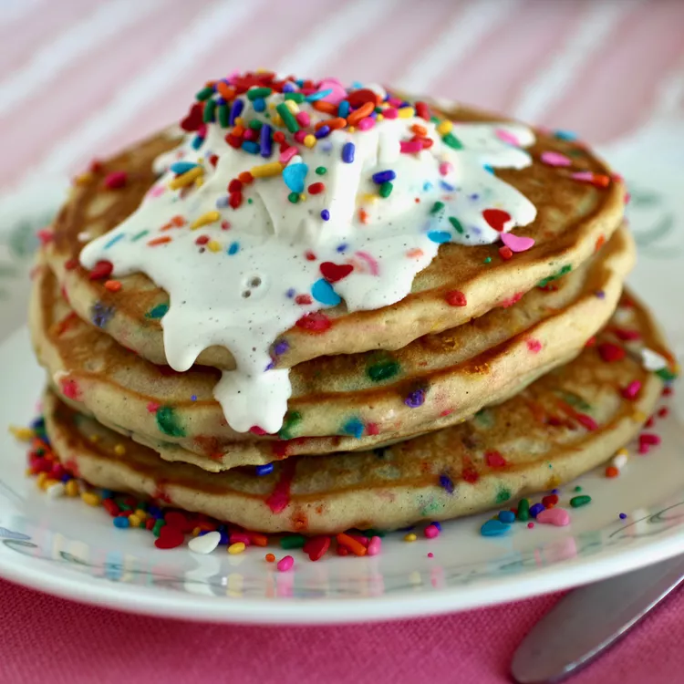

Back to Recipes
Pancakes with Vanilla Cream Sprinkle Sauce

Description
Serve pancakes immediately, with a generous drizzle of sprinkle sauce.
Ingredients
Pancakes
- 1 cup all-purpose flour
- 2 tablespoons white sugar
- 1 teaspoon baking powder
- ½ teaspoon baking soda
- ½ teaspoon salt
- 1 cup buttermilk
- 1 egg
- 2 tablespoons butter, melted
- 1 ½ teaspoons vanilla extract
- ¼ cup sprinkles
Sprinkle Sauce
- 1 cup confectioners' sugar
- ⅓ cup heavy whipping cream
- 1 teaspoon vanilla extract
- ⅛ teaspoon sea salt
- 2 tablespoons sprinkles
- cooking spray
Steps:
- Whisk flour, sugar, baking powder, baking soda, and salt together in a bowl.
- Combine buttermilk, egg, butter, and 1 1/2 teaspoon vanilla extract in a separate bowl. Beat to break up the
egg. Pour
over the flour mixture; stir until just combined. Stir 1/4 cup sprinkles gently into the batter. Allow
batter to rest
for 5 minutes.
- Whisk confectioners' sugar, heavy cream, 1 teaspoon vanilla extract, and salt together in a small bowl until
smooth. Add
2 taHeat a large nonstick skillet over medium-low heat; coat with cooking spray. Drop 1/2 cup batter into
the skillet.
Spread with the back of a spoon to about 1/4-inch thick. Cook until bubbles form and the edges are dry, 2 to
3 minutes.
Flip. Cook until second side is set, 1 to 2 minutes. Transfer to a plate. Repeat with remaining batter.
- Stir sprinkle sauce so sprinkles rise to the top. Serve pancakes with a generous drizzle of sprinkle sauce.